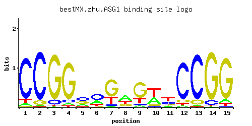

← All factors / TF RECORD
ASG1
YIL130W
Zinc cluster protein proposed to function as a transcriptional regulator involved in the stress response; null mutants have a respiratory deficiency, calcofluor white sensitivity and slightly increased cycloheximide resistance
01 / RECOMMENDED MATRIX
Best-performing DNA-binding model.

Fisher’s P-value0.2051
Information content16.58
Max PWM score18.47
Recommended cutoff9.58
View and copy the recommended matrices ↘
Position frequency matrix (PFM)
A | 0.05 0.02 0.01 0.05 0.23 0.26 0.04 0.48 0.06 0.35 0.11 0.04 0.02 0.01 0.07 C | 0.85 0.89 0.10 0.07 0.42 0.50 0.06 0.07 0.07 0.06 0.32 0.84 0.87 0.08 0.02 G | 0.02 0.08 0.87 0.84 0.28 0.06 0.65 0.22 0.65 0.08 0.14 0.07 0.10 0.89 0.85 T | 0.07 0.01 0.02 0.04 0.06 0.17 0.25 0.23 0.22 0.51 0.43 0.05 0.01 0.02 0.05
Position count matrix (PCM)
A | 5 2 1 5 23 26 4 48 6 35 11 4 2 1 7 C | 85 89 10 7 42 50 6 7 7 6 32 84 87 8 2 G | 2 8 87 84 28 6 65 22 65 8 14 7 10 89 85 T | 7 1 2 4 6 17 25 23 22 51 43 5 1 2 5
Position weight matrix (PWM)
A | -1.86 -2.77 -3.47 -1.86 -0.33 -0.21 -2.08 0.41 -1.67 0.09 -1.07 -2.08 -2.77 -3.47 -1.52 C | 1.55 1.60 -0.59 -0.94 0.85 1.02 -1.10 -0.94 -0.94 -1.10 0.58 1.54 1.58 -0.81 -2.20 G | -2.20 -0.81 1.58 1.54 0.44 -1.10 1.28 0.20 1.28 -0.81 -0.25 -0.94 -0.59 1.60 1.55 T | -1.52 -3.47 -2.77 -2.08 -1.67 -0.63 -0.25 -0.33 -0.37 0.47 0.30 -1.86 -3.47 -2.77 -1.86
02 / COMPARATIVE BENCHMARKS
Alternative candidate matrices 2
Historical matrix candidates from the original ScerTF database. Expand a source to inspect its original logo, scores, and matrix values.
ASG1Badis et. al.P = 0.01485View matrix ↘
ASG1Zhao and StormoP = 0.00759View matrix ↘
03 / EXPERIMENTAL CONTEXT
Gene-level annotations and interactions.
Genes bound in ChIP-chip experiments 1 genes
No Data
Genes affected by TF deletion 1 genes
No Data
Genes supported by both experiments 1 genes
No Data